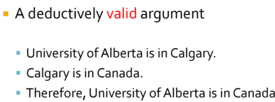
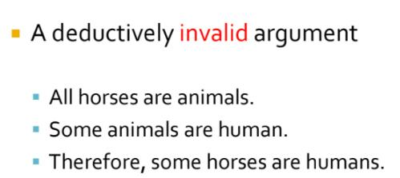
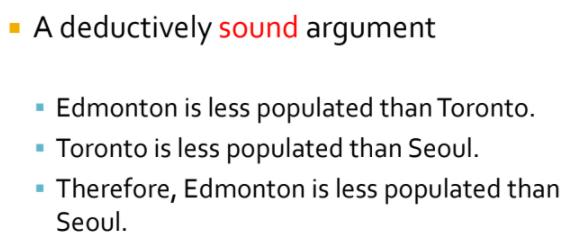
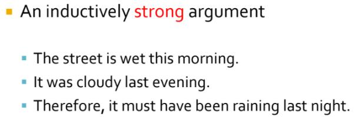
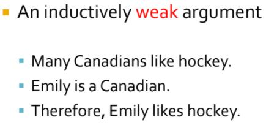
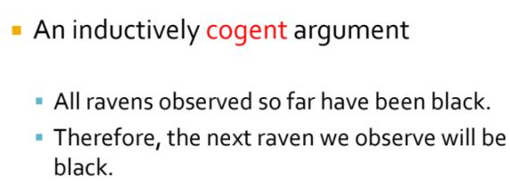

Chapter 2
Deductive and Inductive Arguments
All arguments are intended to support the truth of their conclusions, but args can be structured in vastly different ways to achieve this goal
Logical structure matters, and determines the degrees to which reasoning from true premises ensures a true conclusion
- the struct. and the quality of premises determine whether and to what extent this support is effective
Form, the techincal terms of the strcuture of arguments
Truth Preserving, the flow of truth from premises to the conclusion
Truth is preserved through the inference
In a good argument, true premises are worded and orgainzed in a way that guarantees or makes it very likely that the conclusion is true
- the truth of the premises in a good argument flows into the conclusion (args' structure or form matters, is critical)
Deduction
two ways to poorly constructure a argument
n <= 1 premises - the materials out of which the arg is built - is false
the structure or form of the arg fails to provide adequate support for the conclusion
Deductive arguments, who functions properly, are fully truth preserving are the strongest sort.
- It is said to be deductively valid when a deductive arg is properly structured.
- It is called a deductively sound arg when a deductively valid arg has true premises
- The premises are intended to support the conclusion with certainty
- The truth of the conclusion will necessarily follow from the truth of the premises
Important : A deduction is speech in which, certain things having been supposed, something different from those that are supposed results of necessity (必然地) because of their being so.
"Necessarily" / "of necessity"'s meaning in the context of logic
the conclusion of a valid deducitve arg will "definitely follow", "is sure to follow", or "certainly follows"
- the trurh of the conclusion is entirely supported through the arg's struct. and by the truth of premises
Another way to put this is to say that a properly structured deductive arg is constructed so that it is impossible for the conclusion to be false if the premises are true (if the premises aren't all true, all bets are off)
An arg. is not fully truth preserving, when the truth of the premises doesn't entirely guarantee or ensure the truth of conclusion, the arg is deductively invalid.
Induction
Partially truth preserving
- These arguments do not guarantee their conclusions, but they do give them enough support that they should be taken seriously
The premises are intended to provide strong support for the conclusion
The conclusion is highly probable (很可能的) if the premises are true
- The likelihood of the truth of the conclusion being true is very high if the premises are true
- but never say the conclusion must be / guarante to be true although all the premises are true or give very good reasons to accept the truth of the conclusion
A successful (well-structured) inducitve argument is called inductively strong
- the truth of the premises makes it very likely that the conclusion is true
Inductively weak args are args ub which the truth of the premises does not lend much support to the conclusion
- not enough support for the conclusion - unreasonable to accept the conclusion based solely on the premises
An inductively strong arg with all true premises is called an inductively cogent (有说服力的) arg.
Summary
Deductive arg is either decutively valid or invalid
- If it's valid, it is either sound or unsound
Inducitve arg is either strong or weak
- If it's strong, it is either cogent or not cogent
In a deducitvely valid arg, the information of the conclusion is contained in the information of the premises.
In an inductively strong arg, the information of the conclusion goes beyond the information of the premises
- sometiemes called ampliative (扩充的) arg
Remark
A deductive arg may contain premises that make probability claims yet still be a deductive arg.
- It's not the content of the premises but the way they're related to one another (thier structure), the kind of inference they make
Examples

valid - strcuture, although one premise is false
not sound
- the conclusion is contained in the information of premises, the truth of the premises is already guarantee the truth of conclusion

invalid - the strcuture is prbolematic
- it's deducitve because the premises and conclusion are structured in a way that the premises are intended to fully support the conclsuion
- the premises are true but the conclusion is false




Conditional Claims
a type of complex claim in whic the truth of one claim (the consequent - 后件, 推断), somehow depends upon or is contigent upon the truth of another claim (the antecendent - 前件)
often articulated in the form "if p, then q"
p and q can themselves be either simple or complex claims
In the common, "if p, then q" form, p is the antecedent and q is the consequent
In the minimal sort of relationship between antecedent and consequent, a conditional claim asserts simply that when the antecedent is true the consequent is also true
- A conditional is false when its antecedent is true and its consequent false; otherwise, it is true
Remark
- simply by being conditional claims, do not imply any particular type of relationship btw. the antecedent and consequent, causal of toherwise - and so neither do statements of ncessary and sufficient conditions.
Conditional Claims in Deduction
The relationship btw. the premises and the conclusion of a deductively valid arg may be expressed thoruhg a coditional claim.
- often describe this relationship: "If the premises are true, then the conclusion is true"
Valid deductive arg are conditional claims where the antecedent (the premies) is connected to the consequence (the conclusion) in a particular, logical way called entailment (something that is inferred)
A unique and important feature of conditional statements is that they only proceed in one direction
- can't run the inference in the other direction once the direction is detemrined (not always p to q)
- "if p, then q", the truth of q follows from the truth of p, but the truth of p does not follow from the truth of q
Necessary Conditions
necessary condition is a state of affairs that must occur for another state of affairs to occur
often indicated by the "only if"
- e.g "We'll go to the movies if you clean your rooms" and "We'll go to the movies only ifyou clean your rooms".
- 1st instance, there might be other conditions under which the family goes to the movies (snow or rain, persuasion, etc.)
- 2nd instance, "only if" establishes an exclusive condition that must be met, without which ( {% math %}/leftarrow{% endmath %} the exclusive condition) the antecedent won't be true
The component statement designated by the phrase “only if ” is the necessary condition of a conditional claim
Remark
- 'if' is the sign of the antecedent; 'only if' is the sign of the consequent ?
Example
the presesnce of breathable oxygen is a necessary condition for humans to live, which means humans must have breathable oxygen in order to live.
Written in terms of "if p, then q" - "If humans are living, then breathable oxygen is present."
Therefore:
- The consequent of an "if... then..." statement is the necessary condition for the antecedent
Remark
"if p, then q," the truth of p is claimed to correlate with the truth of q
- a true p is claimed to imply that q is also true
refer to the example, the presence of breathable oxygen does not reuslt in humans living (need more than oxygen to live)
- the presence of breathable oxygen alone is not enough to know that humans can live
Sufficient Condition
a condition that when met is enough to know that some other condition has also been met.
The antecedent of an “if…then…” statement is the sufficient condition for the consequent
Remark
e.g: A black mail who says, "I'll not go to the police with the incriminating information I have about you only if you give me the money"
- this has not said that giving him the money will result in his not informing the police
- he has not said, strictly speaking, what will happen if the money is paid
- the blackmailer has made the much more limited claim that if the moeny is not paid he will inform the police
- paying the blackmailer is necessary for his not going to the plice, but it's not suffcient to guarantee it
Biconditional Claims
A biconditional claim is a complex claim that expresses a relationsip of equivalence btw. two claims.
- Two claims are considered equivalent in this logical sense, when they always have the saem truth value (both true or both false)
Example
"Suzy will get a raise if and only if she gets a promotion"
- "if and only if" - denote the biconditional relationship btw. Suzy's getting a raise and Suzy's getting a promotion.
Classifying and Comparing Claims
Comparing Claims
Consistency
about things fitting together in a way that makes sense
In logical terms, consistency is a term used to describe a set of claims that can all be true at the same time
- Inconsistency, occurs within a set of claims when it is not possible for all of the claims to be true at the same time.
Contradiction (inconsistent)
A contradiction occurs btw. two claims when the truth of one necessitates (使成为必需, 迫使) the falsity of another, and the falsity of one necessitates the truth of the other
occur when for logical reasons two claims must have opposite truth values, and so one must alwasys be false while the other is true.
Contradictory statements can never have the same truth values at the same time
Contrariety (inconsistent)
Contraries are also inconsistent
A relationship btw two claims that occurs when at least one of the claims must be false
impossible for both claims to be true at the same time
Compare to contradiction, contrariety not allow two claims that are true together but can both be false.
Equivalence
describes a relationship btw. two claims that always have the same truth value.
If one claim is true and equivalent to another claim, then the other claim must be true as well
If one claim is false and equivalent to another claim, then the other claim must be false as well
Classifying Single Claims
Contingent Statements
can be either true of false
staments that possibly true or false
to be contingent, require that it is possible in some circumstances it is true and in some other possible circumstances it is false
Self-contradictions
under all possible circumstances they alwasy posses the same truth value - false
also always equivalent to one another
Claims and Definitions
Recall: Claims, are assertions about what is true or false, but they would be vacuous if the words that composed them didn't have specifc meanings
Lexical
- Using one set of words to define anohter word (group of words) is called lexical definition
E.g: pony = a small horse
Stipulative
Potential problem: dictionaries often simply report on the way a word is commonly used, which can nevertheless be conceptually problematic and can change significantly over time
specifying a particular meaning for a term
a new or more precise meaning for a term is simply stipulated - a stipulative definition
- more precise, more accurate, and often more enduring definitions
E.g sound = a valid argument with true premises
Ostensive
Pointing to an instance of the reference of a term
pointing to something that is more complex or impossible to define wihout an instance in experience
E.g: That is a bike. She is Grace
Negative
- Defining something by what it is not c E.g: God is not ignorant.